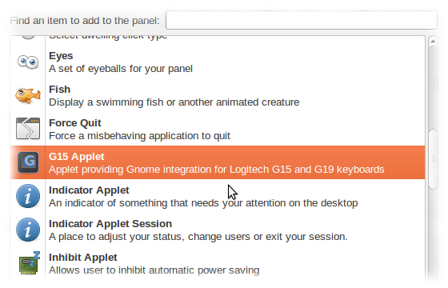

Currently there are two ways to install Gnome15. If you have Ubuntu 10.4 or 10.10, you can use a PPA to install Gnome15 and its dependencies. This is the easiest method if you have this distribution.
Also, there may packages available for your distribution. See the downloads page.
Everyone else will have to Install from source.
Add the ppa:tanktarta/gnome15 to your software sources, and install the gnome15 package. You may do this in a number of ways (Synaptic etc), or from the command line:-
sudo add-apt-repository ppa:tanktarta/gnome15 sudo apt-get update
Now install Gnome15.
sudo apt-get install gnome15
This will install the Gnome15 core and all of its dependencies.
You will also have to install the appropriate driver package for your hardware. Currently 4 drivers are available.
The G19 driver uses g19d to access the keyboard hardware.
sudo apt-get install gnome15-g19d
This will download and install the driver and its dependencies. You will also have to enable the daemon before starting it.
sudo service g19d start
The G15 and variants driver uses g15daemon to access the keyboard hardware.
sudo apt-get install gnome15-g15d
This will download and install the driver and its dependencies. You will also have to enable the daemon before starting it.
sudo service g15daemon start
The GTK driver is a special development driver that emulates all supported models a window on your desktop. You can use this to develop plugins and themes for hardware you do not have.
sudo apt-get install gnome15-gtk
The Gnome15 kernel driver is currently in development, and currently requires you patch your Linux kernel for it to work. See here for more information.
sudo apt-get install gnome15-gtk
There are
There are some additional packages available that extend Gnome15.
First make sure you have all of the dependencies installed (these are listed on the page). A large number of these should be in your distributions repository. For any that aren't you will have to download and install those from source as well.
Next, download the latest source tarball from this site, and extract it somewhere.
cd tar xvzf Downloads/gnome15-0.0.1.tar.gz cd gnome15-0.0.1
Gnome15 uses Autoconf and friends as it's build system. So follow the usual steps to compile and install such packages.
./configure --prefix=/usr make sudo make install
On systems that support panel indicators, Gnome15 will be available in the Startup Applications tool, available in System -> Preferences or the Control Centre.
Locate Gnome15 in the list and ensure the checkbox is ticked. To start Gnome15, either logout and log back in again, or start it manually by pressing Alt+F2, followed by g15-indicator.
If your system does not use Indicators, you will be using the applet version instead. Once installed, you will have a new applet available in your Add To Panel.
Gnome15 will start immediately, there is no need to either logout or in again or manually run anything.
Before Gnome15 can communicate with your keyboard, you must choose the driver. The first time you run Gnome15, a dialog will be displayed prompting you for the driver to use. Select the one appropriate for you hardware.
If you wish to change the driver at a later date, you have two options :-
/usr/lib/gnome15/g15-applet -cor if you have a panel indicator ..
g15-indicator -c
When Gnome15 has started for the first time, none of the plugins will have been enabled, so you will not see anything on the LCD other than the splash screen.
Go into the Preferences dialog using one of the following methods:-